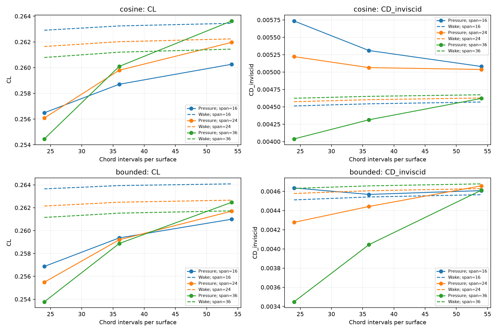
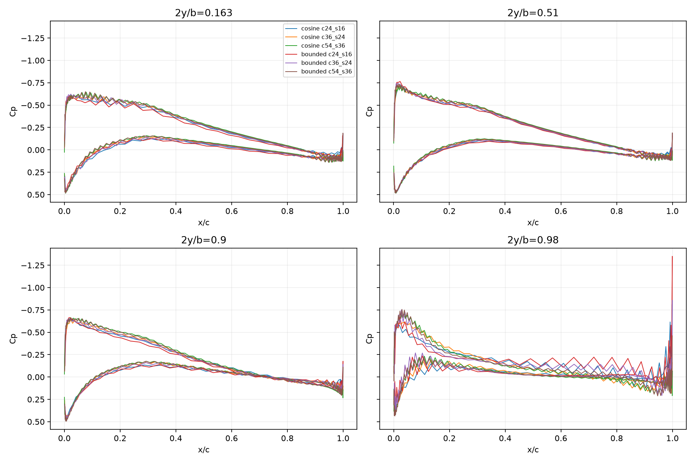

Same RAE101 CAD, 2.4892 m span, 0.49784 m chord, 45° sweep, 30 m/s, 4.2°, 1.225 kg/m³. Root connected, tips open, mirrored shortest-diagonal triangulation. No reference nodes or pressure clipping.
Two 3×3 studies separate chord and span refinement. The diagonal sequence uses an exact 1.5 interval-count ratio in both directions. Bounded spacing uses a fixed smooth map with derivative between 0.1 and 1.9; it is not fitted to the reference.
Full convergence has not been demonstrated. Pressure acceptance uses the previous fixed thresholds: CL 1%, CD 5%, interior Cp RMS 0.02, p95 0.05, two consecutive refinements. The wake result is an independent diagnostic, not a replacement or a rescaling of pressure drag.

| Spacing | Case | Panels | CL pressure | CD pressure | CL wake | CD Trefftz | Raw Cp min | Max aspect |
|---|---|---|---|---|---|---|---|---|
| cosine | c24_s16 | 3072 | 0.2564882 | 0.00573482 | 0.2629077 | 0.004512436 | -0.8086501 | 112.7028 |
| cosine | c24_s24 | 4608 | 0.2560791 | 0.00522232 | 0.2616417 | 0.004573508 | -2.619508 | 75.40437 |
| cosine | c24_s36 | 6912 | 0.2544546 | 0.004038017 | 0.2607873 | 0.004623013 | -8.163045 | 50.34946 |
| cosine | c36_s16 | 4608 | 0.2587056 | 0.005309838 | 0.2632417 | 0.004543174 | -0.7200787 | 253.3619 |
| cosine | c36_s24 | 6912 | 0.2597975 | 0.00506401 | 0.2620176 | 0.004602812 | -2.938389 | 169.5131 |
| cosine | c36_s36 | 10368 | 0.2600951 | 0.004313495 | 0.2612005 | 0.004650502 | -10.30432 | 113.1883 |
| cosine | c54_s16 | 6912 | 0.2602595 | 0.005080161 | 0.2634452 | 0.004569098 | -0.827737 | 569.8365 |
| cosine | c54_s24 | 10368 | 0.2619623 | 0.00503761 | 0.262233 | 0.004627035 | -2.78213 | 381.2521 |
| cosine | c54_s36 | 15552 | 0.2636274 | 0.004620776 | 0.2614379 | 0.004673319 | -10.76739 | 254.572 |
| bounded | c24_s16 | 3072 | 0.256866 | 0.004635746 | 0.2636469 | 0.004511077 | -1.348191 | 126.2216 |
| bounded | c24_s24 | 4608 | 0.2554893 | 0.004276662 | 0.2621471 | 0.004577886 | -2.154492 | 84.71745 |
| bounded | c24_s36 | 6912 | 0.2537748 | 0.003448187 | 0.2611495 | 0.004630776 | -4.404743 | 56.64816 |
| bounded | c36_s16 | 4608 | 0.2593606 | 0.004567979 | 0.2639343 | 0.004541347 | -1.124762 | 199.6145 |
| bounded | c36_s24 | 6912 | 0.2591971 | 0.004442318 | 0.2624824 | 0.004606341 | -2.376546 | 133.9773 |
| bounded | c36_s36 | 10368 | 0.2588731 | 0.00404414 | 0.2615247 | 0.004657234 | -4.831778 | 89.58683 |
| bounded | c54_s16 | 6912 | 0.2609948 | 0.004607809 | 0.2640845 | 0.004565205 | -0.974311 | 306.8441 |
| bounded | c54_s24 | 10368 | 0.2616967 | 0.004657315 | 0.2626595 | 0.004628719 | -2.0762 | 205.9477 |
| bounded | c54_s36 | 15552 | 0.26247 | 0.004611693 | 0.2617258 | 0.004678062 | -4.407586 | 137.7114 |
| Spacing | Refinement | ΔCL % | ΔCD % | Cp RMS | Cp p95 | Pass |
|---|---|---|---|---|---|---|
| cosine | chord: c24_s16 → c36_s16 | 0.865 | 7.411 | 0.01866 | 0.04069 | False |
| cosine | chord: c36_s16 → c54_s16 | 0.601 | 4.325 | 0.01532 | 0.03375 | True |
| cosine | chord: c24_s24 → c36_s24 | 1.452 | 3.031 | 0.02161 | 0.04621 | False |
| cosine | chord: c36_s24 → c54_s24 | 0.833 | 0.521 | 0.01625 | 0.03924 | True |
| cosine | chord: c24_s36 → c36_s36 | 2.217 | 6.822 | 0.02789 | 0.05411 | False |
| cosine | chord: c36_s36 → c54_s36 | 1.358 | 7.124 | 0.01902 | 0.04376 | False |
| cosine | span: c24_s16 → c24_s24 | 0.160 | 8.937 | 0.01941 | 0.04025 | False |
| cosine | span: c24_s24 → c24_s36 | 0.634 | 22.678 | 0.01990 | 0.04086 | False |
| cosine | span: c36_s16 → c36_s24 | 0.422 | 4.630 | 0.01884 | 0.03901 | True |
| cosine | span: c36_s24 → c36_s36 | 0.115 | 14.821 | 0.01907 | 0.04042 | False |
| cosine | span: c54_s16 → c54_s24 | 0.654 | 0.838 | 0.01877 | 0.03877 | True |
| cosine | span: c54_s24 → c54_s36 | 0.636 | 8.274 | 0.01904 | 0.03844 | False |
| cosine | both: c24_s16 → c36_s24 | 1.290 | 11.697 | 0.02310 | 0.04608 | False |
| cosine | both: c36_s24 → c54_s36 | 1.474 | 8.753 | 0.02011 | 0.04281 | False |
| bounded | chord: c24_s16 → c36_s16 | 0.971 | 1.462 | 0.01919 | 0.03905 | True |
| bounded | chord: c36_s16 → c54_s16 | 0.630 | 0.872 | 0.01588 | 0.03077 | True |
| bounded | chord: c24_s24 → c36_s24 | 1.451 | 3.874 | 0.02167 | 0.04429 | False |
| bounded | chord: c36_s24 → c54_s24 | 0.964 | 4.840 | 0.01621 | 0.03519 | True |
| bounded | chord: c24_s36 → c36_s36 | 2.009 | 17.283 | 0.02688 | 0.05371 | False |
| bounded | chord: c36_s36 → c54_s36 | 1.389 | 14.034 | 0.01965 | 0.04204 | False |
| bounded | span: c24_s16 → c24_s24 | 0.536 | 7.746 | 0.01818 | 0.03552 | False |
| bounded | span: c24_s24 → c24_s36 | 0.671 | 19.372 | 0.02009 | 0.04121 | False |
| bounded | span: c36_s16 → c36_s24 | 0.063 | 2.751 | 0.01779 | 0.03324 | True |
| bounded | span: c36_s24 → c36_s36 | 0.125 | 8.963 | 0.01955 | 0.04020 | False |
| bounded | span: c54_s16 → c54_s24 | 0.269 | 1.074 | 0.01663 | 0.03315 | True |
| bounded | span: c54_s24 → c54_s36 | 0.296 | 0.980 | 0.01896 | 0.03889 | True |
| bounded | both: c24_s16 → c36_s24 | 0.908 | 4.173 | 0.02480 | 0.04800 | False |
| bounded | both: c36_s24 → c54_s36 | 1.263 | 3.813 | 0.02059 | 0.04154 | False |

Different fluid boundary from the open-tip tutorial, with FLOWPanel's closed least-squares solver. The raw minimum includes tip caps; the wing-surface minimum is reported separately to localize the peaks, not to remove them.
| Case | Panels | CL pressure | CD pressure | CD Trefftz | Raw Cp min | Wing surface Cp min | Normal residual RMS, m/s |
|---|---|---|---|---|---|---|---|
| c24_s16 | 3164 | 0.2538888 | 0.0048881 | 0.0045241 | -14.439 | -0.757 | 0.0171457 |
| c36_s24 | 7052 | 0.2571069 | 0.0052387 | 0.0046199 | -29.184 | -0.748 | 0.00591746 |
| c54_s36 | 15764 | 0.2606218 | 0.0059619 | 0.0046902 | -57.347 | -0.954 | 0.00119869 |
All audits and wake comparisons · Coefficient table
Trefftz quadrature uses the actual solved circulation and the rigid wake projected normal to freestream; it was checked against elliptical loading. It does not establish relaxed-wake accuracy. See the impulse and energy formulation. No empirical circulation shape or lift-based scaling is applied here.